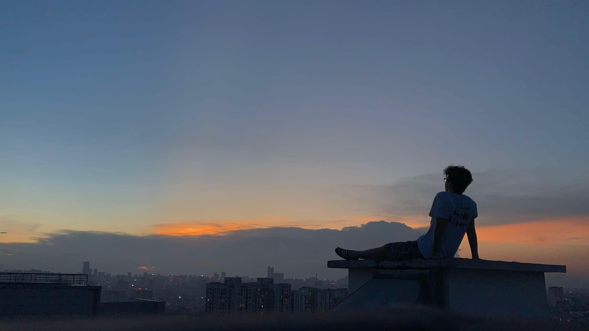

About Me
Hello! I'm Bach Nguyen, a Computer Science major with a minor in Data Science here at MSU. Even though I am a computer sience, I am also interested in startups and business, how a company operates and the stocks market. Aside from Computer Science and Business, I also have some hobbies that I enjoy doing in my free time. I enjoy photography, especially landscape and astrophotography. I also enjoy cooking and gaming. I am also a big fan of flying and exploring new places. I have been to many places in the world and I hope to visit more in the future.